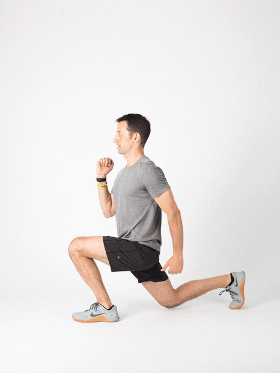

leg Day Workout Routine: Guide For Building Muscle & Strength
1. Warm up
Kick-start your workout with about 5 to 10 minutes of light cardio. Activities such as cycling, push-ups, or jogging increase blood flow and warm up your muscle groups.
It also prepares the body for the upcoming workout. You may find it helpful to include stretches for your shoulders, chest, and triceps during warm-ups.

2.Barbell Squats:
The barbell squat is a compound exercise that targets multiple muscle groups in the lower body, including the quadriceps, hamstrings, glutes, and lower back. Here's a step-by-step guide on how to perform the barbell squat with proper form:
Setup:
1 Position the Bar: Start by setting the barbell on the squat rack at about chest height. Ensure that the bar is centered and secured on the rack.
Adjust the Bar Height: Adjust the height of the squat rack so that when you step under the bar, it rests comfortably on your upper back, just below the base of your neck.
Load the Bar: Add weight plates to both sides of the bar. The amount of weight will depend on your strength and fitness level. Start with a manageable weight until you are comfortable with the movement.
2 Starting Position:
Stand facing the bar with your feet shoulder-width apart.
Step under the bar and position it across your upper back. The bar should rest on the meaty part of your traps, not on your neck.
3 Grip the Bar:
Grasp the bar with both hands slightly wider than shoulder-width apart. Your palms should be facing forward.
4 Position Your Body:
Step back from the rack, keeping your feet shoulder-width apart or slightly wider.
Point your toes slightly outward to accommodate your natural hip and knee alignment.
5 Brace Your Core:
Take a deep breath and brace your core. This helps stabilize your spine during the lift.
6 Descend into the Squat:
Initiate the squat by pushing your hips back and bending your knees.
Lower your body by bending at the hips and knees simultaneously.
Keep your chest up and maintain a neutral spine throughout the movement.
7 Depth:
Ideally, lower yourself until your thighs are parallel to the ground or below parallel if you have the flexibility and strength to do so.
8 Ascend:
Push through your heels to drive yourself back up to the starting position.
Keep your core engaged and maintain a straight back as you ascend.
9 Lockout:
Stand tall and straighten your hips and knees at the top of the movement.

3. Deadlifts:
The deadlift is a compound exercise that primarily targets the muscles in the posterior chain, including the lower back, glutes, hamstrings, and also works the muscles in the core and upper back. Here's a step-by-step guide on how to perform the conventional barbell deadlift with proper form:
1 Bar Placement: Start by placing a barbell on the ground. Stand with your feet hip-width apart, with your midfoot centered under the bar.
2 Grip: Bend at your hips and knees to lower your body, and grasp the bar with both hands using a grip that is slightly wider than shoulder-width. You can choose between a double overhand grip (both palms facing you) or a mixed grip (one palm facing you, one palm facing away).
Hand Placement: Your hands should be placed just outside your knees.
3 Foot Position: Position your feet so that the bar is over the middle of your feet. Your toes can be slightly turned out.
4 Stance: Your stance can vary, but a common starting point is to have your feet about hip-width apart.
5 Set Your Back:
Engage your lats by pulling your shoulder blades back and down.
Maintain a neutral spine by keeping your back flat. Do not round your lower back.
Lift Your Chest: Lift your chest and look straight ahead to help maintain a neutral spine.
6 Lift the Bar:
Push through your heels, straightening your hips and knees simultaneously.
As the bar passes your knees, extend your hips fully by thrusting them forward.
7 Stand Tall:
Stand up straight, keeping the barbell close to your body throughout the lift.
8 Lower the Bar:
To lower the bar, push your hips back first, then bend your knees.
Keep the bar close to your body as it descends.
9 Return to Starting Position:
Once the bar reaches the ground, you're back at the starting position.

4. Leg Press:
The leg press is a resistance training exercise that primarily targets the muscles of the lower body, including the quadriceps, hamstrings, and glutes. It's an effective exercise for building strength and muscle in the legs. Here's how to perform the leg press on a leg press machine:
Setup:
1 Seat Position: Adjust the seat of the leg press machine so that your lower back is comfortably pressed against the backrest.
2 Foot Placement: Place your feet shoulder-width apart on the footplate. Ensure that your feet are flat and centered on the footplate.
3 Knee Position: Your knees should be aligned with your feet. They should not collapse inward or push too far out.
4 Back Position: Your lower back should be firmly pressed against the backrest, and your chest should be up.
5 Handles: Grasp the handles on the sides of the machine to help stabilize your upper body.
Execution:
1 Push the Platform Away:
Press through your heels and extend your legs to push the platform away from you.
Keep your back against the backrest throughout the movement.
2 Full Extension:
Fully extend your legs without locking your knees. Your legs should be straight, but your knees should still maintain a slight bend.
3 Lower the Platform:
In a controlled manner, lower the platform back down toward you, bending your knees.
4 Repeat:
Perform the desired number of repetitions, maintaining a controlled and steady pace.

5. Lunges:
Lunges are a versatile lower body exercise that targets the muscles in the quadriceps, hamstrings, glutes, and calves. Lunges also engage the core for stabilization. Here's a step-by-step guide on how to perform a basic forward lunge:
1 Starting Position:
Stand with your feet together and maintain good posture with your shoulders back and chest up.
2 Step Forward:
Take a step forward with your right foot. The length of your step will depend on your comfort and flexibility, but a comfortable stride is usually about two to three feet.
3 Lower Your Body:
Bend both knees and lower your body toward the ground. Your front knee should be directly above your ankle, and your back knee should hover just above the floor without touching it.
4 Maintain Upright Torso:
Keep your upper body straight and your chest lifted throughout the movement. Avoid leaning too far forward or backward.
5 Push Back:
Push off with your right foot, returning to the starting position.
6 Switch Legs:
Repeat the lunge on the opposite leg by stepping forward with your left foot.

6. Leg Extensions:
Leg extensions are an isolation exercise that targets the quadriceps muscles at the front of the thighs. This exercise is typically performed on a leg extension machine. Here's a step-by-step guide on how to perform leg extensions:
Setup:
1 Adjust the Machine:
Set the machine according to your body size. Adjust the seat so that the back of your knees is aligned with the machine's pivot point. The pad should be just above your ankles.
2 Select the Weight:
Choose an appropriate weight for your fitness level. It's recommended to start with a lighter weight and progressively increase as needed.
3 Position Yourself:
Sit on the machine with your back flat against the seat and your feet under the leg extension pad.
4 Adjust the Leg Pad:
Ensure that the leg pad is snug against your shins.
5 Extension:
Grasp the handles on the sides of the machine for stability.
Straighten your legs and lift the leg extension pad upward by extending your knees.
6 Full Extension:
Continue lifting until your legs are almost straight, but without locking your knees. Maintain control throughout the movement.
7 Contraction:
At the top of the movement, briefly squeeze your quadriceps to fully engage the muscles.
8 Lowering Phase:
Slowly lower the leg extension pad back to the starting position, bending your knees in a controlled manner.
9 Repeat:
Perform the desired number of repetitions.

7. Calf Raises:
Calf raises are a simple yet effective exercise that targets the muscles of the calf, primarily the gastrocnemius and soleus. Here's a step-by-step guide on how to perform standing calf raises:
1 Starting Position:
Stand with your feet hip-width apart and ensure that your weight is evenly distributed on both feet.
You can perform calf raises on a flat surface or on an elevated surface like a step for increased range of motion.
2 Raise Your Heels:
Lift your heels off the ground by pushing through the balls of your feet.
Focus on fully extending your ankles and lifting your heels as high as comfortably possible.
3 Contract Your Calves:
At the top of the movement, squeeze your calf muscles and hold for a brief moment to maximize muscle engagement.
4 Lower Your Heels:
Lower your heels back down to the starting position, allowing your calves to stretch.
5 Repeat:
Perform the desired number of repetitions.